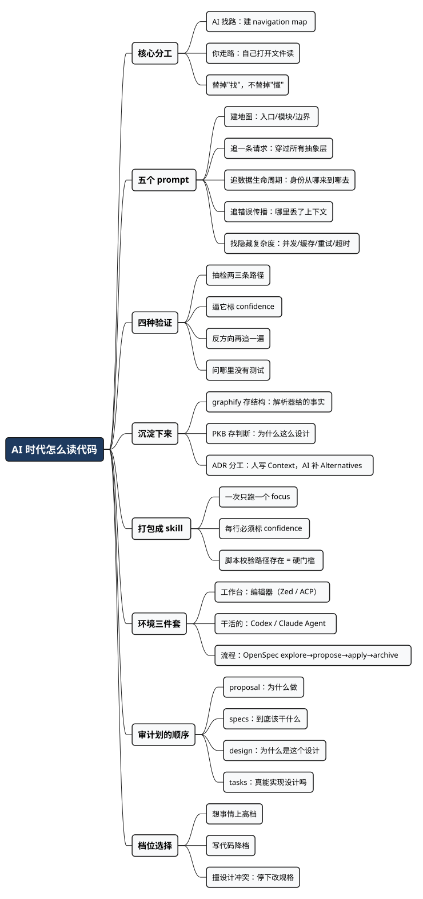

AI 时代怎么读代码：把 AI 当导游，别当替身
Posted on 三 02 9月 2026 in AI
| Abstract | AI 时代怎么读代码：把 AI 当导游，别当替身 |
|---|---|
| Authors | Walter Fan |
| Category | learning note |
| Version | v1.0 |
| Updated | 2026-09-02 |
| License | CC-BY-NC-ND 4.0 |
大纲
展开看看
- 一个诱惑：让 AI 替你读完仓库，你得到的是"读过的错觉"
- 老办法为什么不能直接丢：mindmap 和 wiki 的价值在画的过程，不在产物
- 新分工：AI 找路，你走路
- 五个 prompt：建地图、追一条请求、追身份、追错误、找隐藏的复杂度
- 四种验证：抽检路径、逼它标不确定、反向再追一遍、问哪里没测试
- 把地图沉淀下来：图谱存"是什么"，知识库存"为什么"
- 打包成 skill：四条验证里只有一条能自动化，那就必须自动化
- 读懂之后才动手：一个工作台 + 一个 agent + 一个流程
- 档位选择：为什么写代码那一步反而要降档
接手一个陌生代码库，我有一套用了很多年的仪式：先画 mindmap，把模块、边界、依赖一层层摊开；再写一篇 wiki，把"这个请求是怎么走到数据库的"用大白话讲一遍。慢，慢得让人心焦。但画完之后，我脑子里是有一张图的——出了故障，我能直接说出该去哪个文件看。
现在有了 AI，我当然想提效。最直接的想法就是：把整个仓库丢给 agent，让它给我一份架构总结不就完了？
但这条路我不敢走。 因为 AI 给的摘要，读起来是舒服的——分层清楚、术语准确、连配置来源都列全了。问题是"读过一份好摘要"和"脑子里有那张图"完全是两件事。 需要改代码的时候，你要的不是一段描述，是能立刻说出"去打开哪个文件"的定位能力。这个能力从来不是读出来的，是自己一条条追出来的。
所以我最后定下来的分工是：AI 只负责找路，代码还是我自己读。 这篇写这套分工怎么落地——五个我固定使用的 prompt、四种防止被 AI 带偏的验证手段，以及读懂之后怎么接上工程流程。
先声明一句，免得读者误会：这不是一篇"AI 帮你读代码"的推荐文，恰恰相反，是一篇"哪一半绝不能交给 AI"的划界文。
一、老办法为什么不能直接丢掉
要划这条界，得先看清老办法的成本结构——AI 该替掉哪一半，答案就在里面。
grep 关键词
↓
Go to Definition
↓
Find References
↓
Call Hierarchy
↓
自己在脑子里建模型
前四步是找，最后一步是懂。而时间的分布很不均：绝大部分都耗在前四步——关键词猜错了要重猜，跨了一层抽象就断线，遇到反射和依赖注入干脆断得彻底。真正建立理解的时间，其实很少。
画 mindmap 和写 wiki 恰好卡在这个位置上。它们看起来是在产出文档，实际上是强迫我把找来的碎片压成一个结构——你没法给一个自己都说不清的模块起名字，也没法给一条自己没走通的链条画箭头。那张图不是画完才有的，是画的过程中长出来的。
所以界就划在这儿：AI 替掉前四步，我省下大半时间；AI 替掉最后一步，我什么都没剩下。
二、新分工：AI 找路，你走路
换成现在的流程，长这样：
AI 找到入口
↓
AI 列出关键文件和函数
↓
你在编辑器里逐个打开
↓
你自己读
↓
读不懂的地方，问 AI
差别在哪一步？在第三步和第四步之间那个"你"。
不要让 AI 替你读整个 codebase，而是让 AI 帮你建 navigation map。 地图是它给的，路还是你自己走一遍。
这里有个术语我先解释一下，后面会反复用到：navigation map，我说的不是架构图，而是一份"要看懂这件事，你需要打开哪几个文件、按什么顺序"的清单。它的价值不是完整，而是顺序正确——一个陌生仓库里最贵的东西不是信息量，是"从哪儿开始看"。
打个不太精确但好懂的比方：你到一座陌生城市，导游告诉你先去哪、怎么坐车、下一站在哪；但路你得自己走，风景你得自己看。你不会因为导游描述得生动，就觉得自己去过了。让 AI 替你读代码，就是听了一路解说，然后以为自己逛完了城。
三、五个固定使用的 code reading prompt
这五个是我攒下来的，每个都有明确用途。共同点有三条，值得先说：
- 都带
Do not modify code——读代码阶段任何修改都是干扰，而且会污染 git 状态。 - 都要求给出文件位置——不给位置的解释没有价值，因为你没法验证。
- 都要求分步骤给出职责——一句"这里处理了鉴权"没用，得说清是哪个函数、负责什么。
Prompt 1：建地图
刚拿到仓库、连目录都不认识的时候用。
Give me a high-level architecture of this repository.
Identify:
- application entry points
- major components/modules
- important interfaces
- databases
- external services
- message queues
- HTTP/RPC boundaries
- authentication and authorization boundaries
- configuration sources
For each important component, point me to the relevant files.
Do not modify any code.
它的产出不是给你读的，是给你打开文件用的。我一般把这份输出直接贴到笔记里，当成接下来两三个小时的阅读清单。
Prompt 2：追一条请求
我用得最多的一个。如果只能留一个 prompt，我留这个。
Trace one request through the system.
Start from the HTTP entry point and follow it until
the request reaches the database.
Show:
HTTP endpoint
→ handler/controller
→ middleware
→ service
→ business logic
→ repository/DAO
→ database
For each step, provide:
- file
- class/function
- responsibility
Do not modify code.
为什么这条最有效？因为一条完整的请求链会强行穿过所有的抽象层。你追完一条，框架的约定、分层的规矩、依赖注入的套路、日志和错误处理的位置，全都顺带见过一遍了。追第二条的时候，速度会快好几倍。
这也正是过去写 wiki 最耗时的部分。现在 AI 几十秒给我一条链，我逐个打开验证一遍——省掉的是"找"，保留的是"走"。
Prompt 3：追一份数据的生命周期
做后端的话，这条特别值。以"用户身份"为例：
Trace the lifecycle of the user identity.
Where is it created?
Where is it extracted?
Where is it stored?
How is it propagated between layers?
Where is it consumed?
Where can it be lost or modified?
Show the relevant files and functions.
Do not modify code.
你可能会拿到这样一条链：
JWT
↓
HTTP Middleware
↓
Context
↓
Service
↓
Authorization
然后追问一句："Is this identity propagation trustworthy?"
这一问就从读代码进到安全分析了。真实项目里我见过的坑基本都在这条链的接缝上：中间某一层为了方便，把身份从 context 里取出来又塞回一个可变的结构体；或者异步任务里身份根本没传过去，用了一个默认账号。这种问题读单个文件永远看不出来，只有把整条链摊平才会露出来。
Prompt 4：追错误怎么传
排查线上问题的时候用这条，比直接问"为什么会有这个 bug"有效得多。
Trace how errors propagate through the system.
Starting from a database error:
DB
→ repository
→ service
→ handler
→ middleware
→ HTTP response
Identify:
- where errors are wrapped
- where errors are logged
- where errors are translated
- where errors lose context
- HTTP status mapping
where errors lose context 是这条里最有价值的一问。绝大多数"日志里什么都看不出来"的故障，根源都是中间某一层把原始错误吞了，换成一个自己编的通用错误往上抛。这个位置读代码时很难注意到，但一问就问出来了。
Prompt 5：找隐藏的复杂度
准备动手改之前用。这条我建议你专门存下来。
Before designing this change, identify hidden risks
in the existing implementation.
Look specifically for:
- concurrency
- caching
- consistency
- transactions
- retries
- timeouts
- race conditions
- backward compatibility
- security boundaries
- failure modes
- observability
Do not modify code.
它问的不是"代码怎么写的"，而是"这段代码在什么情况下会不按你想的那样运行"。缓存、重试、超时、并发这几项，是我见过最多"改完在测试环境好好的，上线就出事"的来源。
四、四种验证：怎么知道 AI 没在瞎说
这一节最要紧，因为 AI 给的地图看起来永远是对的——格式工整、术语准确、路径像真的。它出错的时候不会告诉你，而是给你一个同样自信的错答案。
我现在固定做四件事：
1. 抽检路径。 从它给的清单里随机挑两三条 file:function，自己打开，看职责描述对不对。错一条，整份重新怀疑。 这个动作只要两分钟，但它是唯一真正廉价的验证——路径要么存在要么不存在，没有含糊空间。
2. 逼它标出不确定。 追加一句：
For each step above, mark your confidence (high/medium/low),
and list the assumptions you did NOT verify by reading code.
标成 low 的地方，就是你必须亲自看的地方。这句话很朴素，但效果意外地好——不问的时候它一律说得斩钉截铁，问了之后往往老实交代"这一层我是根据命名推断的"。
3. 反向再追一遍。 第一次从 HTTP 入口往下追到数据库，第二次换个方向：指定一张表，让它往上追是谁写的。两条链应该在中间对上。 对不上的那一段，就是它编的，或者是你还没理解的隐藏路径——两种情况都值得你亲自去看。
4. 问它哪里没有测试。
Which parts of this flow have no test coverage?
这个问题一举两得：没测试的代码本身就是风险点；同时，没测试的地方 AI 的理解也最不可靠——它没有可执行的证据，只能靠命名和上下文猜。
四条加起来花不了多少时间。跟"信了一份错地图、改错了地方、上线之后回滚"比，这点成本便宜到不用犹豫。
五、别每次都从零开始：把地图沉淀下来
上面这套流程有个隐藏的浪费：每开一个新会话，AI 都要重新找一遍路。 你今天花两小时让它把请求链摸清楚，明天换个会话问同一个仓库，它照样从 grep 开始。
人类不这样。新同事第一天靠 grep，第三个月靠脑子里那张"谁调谁、改这儿会崩哪儿"的图。区别在于人会把图留下来，而 agent 每次都从零开始。
所以除了"当场问"，还得有"沉淀下来"。我用的是两样东西，分工很清楚：一个存事实，一个存判断。
事实那一半：先把结构解析出来
graphify 的做法是用 tree-sitter 把代码解析成一张知识图谱，存成 graph.json，之后所有问题都查图，不查文件。它有个挺硬气的选择：不做向量检索，不用 embedding，纯 AST。
理由站得住：代码的结构是确定的。import 就是 import，class A(B) 就是继承，用语法树解析出来百分百准确，凭什么先转成一堆浮点数再算余弦相似度？
我在本机（0.9.53）拿 httpx 跑过：72 个代码文件、12.8 秒建完图、零 token。更值钱的是它给每条边打的标签——EXTRACTED 是源码里白纸黑字写着的，置信度恒为 1.0；INFERRED 是推断出来的，带 0.55~0.95 的分数。httpx 上跑出来九成以上是 EXTRACTED。
这个区分正好接上了第四节的问题。 前面我们费劲让 AI 自己标 confidence，靠的是追问和自觉；图谱里这个标签是解析器给的，不是模型给的——"这条是我读出来的"和"这条是我猜的"，第一次有了机器判定的版本。
它也不是万能：图会过期，得重新跑；中文查询目前查不到；文档那一半（没有语法树，只能靠 LLM 抽）我持怀疑态度。当代码地图用，别指望它长成第二个大脑。这个工具我单独写过一篇实测，这里不展开。
判断那一半：把读懂的东西写下来
图谱能告诉你 A 调用了 B，但告诉不了你为什么当初这么设计、哪条路踩过坑、这个模块为什么不能动。这些是读代码读出来的判断，解析器解析不出来。
这部分我用自己写的 project-knowledge-base 这个 skill（简称 PKB）来沉淀：把项目知识写成 AI 可读的 Markdown——项目概览、仓库地图、C4 架构、ADR（架构决策记录）、运行手册，需要的话再用 Sphinx 发成 HTML。
它有一条设计原则我认为最关键，也最容易被忽略：建了知识库，如果消费的时候一次性全塞给 LLM，那等于白建。 所以 PKB 把"渐进披露"做成了机制而不是纪律——/PKB-query 按需检索单页或单节，而不是 read man/** 把整棵树倒进去。这和第三节那个思路是同一件事：给 navigation map，不给全文背诵。
还有个细节值得说：ADR 的分工是人写 Context 和 Decision，AI 补 Alternatives 和 Consequences。为什么当初这么选、当时的约束是什么，只有人知道；调研替代方案、推演后果，AI 干得比人快。这条分工线和整篇文章是一致的——判断归人，检索归 AI。
三样东西怎么配合
| 层次 | 工具 | 存什么 | 会不会过期 |
|---|---|---|---|
| 结构 | graphify | 谁调谁、谁继承谁（解析器给的事实） | 会，重跑一遍就行 |
| 判断 | PKB | 为什么这么设计、踩过什么坑（人给的判断） | 会，但要人来更新 |
| 当场 | 五个 prompt + 验证 | 这次要回答的具体问题 | 不需要，用完即弃 |
顺序上我建议：先建图（十几秒，便宜），再用 prompt 追具体问题（图能帮 AI 少走弯路），读懂之后把判断写进 PKB（下次不用重来）。
一句话：
图谱存"是什么"，知识库存"为什么"，prompt 解决"这次要干什么"。 三样都会过期，但重建成本差得远——图几十秒，知识库要人重新想一遍。
六、把这套东西装进 skill：让第一条验证自动化
上面这些 prompt 和验证动作，手工用几次就会觉得别扭：每次都要翻笔记、复制粘贴、改措辞，追加"标一下 confidence"还经常忘。能固化成流程的东西，就不该靠记性。 所以我把它们打包成了一个 AI skill——现在各家 agent（Claude Code、Codex、Cursor、OpenCode）都支持这种形式：一个 SKILL.md 描述"什么时候用、怎么做、什么算做完"，加上几个脚本和模板。
这里面最值得说的一个设计决定：四条验证里，只有第一条能真正自动化，那就必须自动化。
为什么？看看这四条的性质差别：
| 验证 | 判断依据 | 能不能自动化 |
|---|---|---|
| 路径/符号是否存在 | 文件在不在磁盘上 | 能，二值答案，没有解释空间 |
| 抽检职责描述 | 这个函数是不是真干这事 | 不能，需要人读 |
| 标 confidence | AI 对自己的把握 | 不能，只能追问 |
| 反向再追 | 两条链能否对上 | 半自动，得再跑一轮 |
第一条是唯一"不需要判断力"的：路径要么存在要么不存在。于是我写了个脚本，把 AI 报出来的每一行 path + symbol 拿去和磁盘对：文件不存在的标 PATH_MISSING，文件在但符号搜不到的标 SYMBOL_MISSING，行号偏得太远的标 LINE_DRIFT。有一条硬失败，整份地图判 FAIL，skill 里规定这时候不许把地图当可用结果交出去。
它还顺手干一件事：路径不对但同名文件在别处存在时，直接把真实位置列出来——这种"目录猜错了"是最常见的失败，也最好修。
skill 的形状最后是这样：
code-reading-map/
├── SKILL.md # 什么时候用、五个阶段、验证门槛
├── assets/prompts/ # 六个 focus 各一个模板
│ ├── architecture-map.md # 建地图
│ ├── request-trace.md # 追一条请求
│ ├── data-lifecycle.md # 追数据生命周期
│ ├── error-flow.md # 追错误传播
│ ├── hidden-complexity.md # 找隐藏复杂度
│ └── reverse-trace.md # 反向交叉验证
├── scripts/
│ ├── render_prompt.py # 探测仓库结构 + 渲染 prompt
│ └── verify_map.py # 硬门槛：校验路径真实存在
└── references/ # 验证手册、地图格式契约、focus 选择指南
用起来就是两条命令。先出地图：
python3 scripts/render_prompt.py --focus request --project-root /path/to/repo
再验证：
python3 scripts/verify_map.py /tmp/reading/request-map.md --project-root /path/to/repo
失败的时候输出长这样：
| Status | path | symbol | Conf | Detail |
|--------------|---------------------------|--------------|--------|-------------------------------------------|
| OK | internal/api/router.go | RegisterRoutes | high | found `RegisterRoutes` at line 42 |
| PATH_MISSING | internal/service/order.go | Service.Create | high | not here; same filename exists at: internal/biz/order.go |
VERDICT: FAIL — do not trust this map.
注意那行 PATH_MISSING 的 confidence 是 high——AI 对一个不存在的文件也可以非常自信。 这就是为什么这道门槛必须由脚本把守，不能靠"我看着挺像"。
做 skill 相比散着放 prompt，真正的好处不是省了复制粘贴，而是三件事被固定住了：一次只跑一个 focus（混着问就会得到一份什么都覆盖、什么都定位不了的文档）、每行必须标 confidence、交付前必须过验证。这三条我自己手工做的时候，忙起来第一个忘的就是最后一条。
至于 skill 怎么写，那是另一个话题了，我改天单独写一篇。这里只说结论：你反复用的 prompt，值得升级成有验证门槛的 skill；能被脚本判定的事，别留给自己的记性。
七、读懂之后才动手
读懂了，接下来才是改。这一步我只要三件东西，别装十几个 AI 工具：
- 一个工作台：编辑器。我在试 Zed，因为它把 agent 面板和自己读代码放在同一个窗口里——按第二节那个分工，"AI 给清单"和"我逐个打开"本来就该在一个地方发生，来回切窗口是纯损耗。
- 一个 agent：Codex（或 Claude Agent、OpenCode 都行）。
- 一个流程：OpenSpec。
这三样在 macOS、Linux、Windows 上都能装，下面说的东西也都不依赖某个操作系统。
这三样不是互相竞争的，关系是：
编辑器是工作台，agent 是干活的，OpenSpec 是工程流程。
Zed 通过 ACP（Agent Client Protocol，一个让任意 agent 接入任意编辑器的开放协议）把外部 agent 接进来，官方文档目前列出的包括 Claude Agent、Codex、OpenCode、Gemini CLI、Copilot、Cursor 等，在 Zed 里用 zed: acp registry 就能装。agent 是独立进程，计费和认证都是你和 agent 提供方之间的事，跟编辑器无关（Zed 文档）。好处很实在：流程不绑死在某个 IDE 上，换编辑器不用重学一遍。
OpenSpec 是干什么的？一句话：把"改什么、怎么改、分几步"先写成人能审的 markdown，审完了再让 agent 照着写代码。 它默认的一圈是六个动作（我装的是 1.10.0）：
explore → propose → apply → update / sync → archive
explore 只调查不改代码，正好就是前面几节干的事——官方也把它定位成"有问题但还没方案时的第一步"，不产生任何文件。verify（检查实现有没有偏离计划）不在默认档里，要另外开，但我建议你开上（OpenSpec 文档）。
不同工具里调用方式不一样：Claude Code 里是 /opsx:explore 这种短命令，别的工具用技能名或者干脆一句白话"propose a change to add rate limiting"也行。
审的顺序，和每一步该看什么
propose 会给你四份文件。我固定按这个顺序看，而且每份看的东西不一样：
| 文件 | 只问一个问题 | 重点看 |
|---|---|---|
proposal.md |
为什么要做？ | 问题是不是真问题，范围是不是太大 |
specs/ |
系统到底该干什么？ | MUST / MUST NOT、错误情况、边界情况、向后兼容 |
design.md |
为什么是这个设计？ | 考虑过哪些替代方案，取舍是什么 |
tasks.md |
这些任务真能实现这个设计吗？ | 有没有漏项 |
design.md 那一栏我会追问一串：依赖挂了怎么办？重启的时候怎么办？网络分区的时候怎么办？密钥轮转的时候怎么办？并发请求的时候怎么办？——这几个问题回答不上来，设计就还没成型。
tasks.md 最容易糊弄过去。举个例子，设计写的是"加一个分布式鉴权缓存"，任务列出来是：
1. Add cache
2. Add API
3. Add tests
这我一定打回去。因为至少漏了：缓存失效、TTL、脏鉴权数据、竞态、失败模式、监控指标、配置项、灰度迁移。任务列表的长度和设计的复杂度不匹配，就是漏了。
还有一招我很推荐：批准之前，专门开一轮让 AI 挑刺，并且明确要求它先别改。
Critically review this proposed design.
Act as a Staff/Principal Engineer.
Do not rewrite the design yet. Instead identify:
1. Incorrect assumptions
2. Missing requirements
3. Missing edge cases
4. Security risks
5. Concurrency issues
6. Failure modes
7. Scalability concerns
8. Backward compatibility issues
9. Operational concerns
10. Places where the implementation plan is incomplete
Be skeptical and try to break the design.
Do not rewrite the design yet 这句很重要。不加这句，它会直接给你一版改好的设计——问题被顺手抹平了，你反而失去了判断的机会。
八、档位：为什么写代码那一步反而要降档
各家模型都有推理强度的旋钮。我不写具体型号，因为过几个月就变了；按能力分三档说：
- 强推理档：最贵最慢，用来想事情
- 主力档：日常干活
- 轻量档：机械操作
我现在的分配是这样：
| 阶段 | 默认 | 复杂时 |
|---|---|---|
| 读代码 / explore | 主力档 + 高推理 | 强推理档 |
| 出方案 / propose | 主力档 + 高推理 | 强推理档 + 最高推理 |
| 挑刺 / review | 强推理档 | 强推理档 + 最高推理 |
| 写代码 / apply | 主力档 + 中推理 | 主力档 + 高推理 |
| 机械改动 | 轻量档 | — |
| 排查问题 / debug | 主力档 + 高推理 | 强推理档 |
| 撞上设计冲突 | — | 强推理档 + 最高推理 |
碰到 OAuth、OIDC、JWT、Kubernetes、STS、鉴权、密钥、PKI 这类东西，我会毫不犹豫直接上最高档。理由很简单：这些地方的设计错误，代价是安全事故，不是返工。
最反直觉的是 apply 那一行——写代码反而降档。 因为到这一步，问题已经变了：
propose 阶段问的是：What should we build?
apply 阶段问的是：How do I implement this task correctly?
第一个问题需要判断力，第二个问题需要的是照着做。任务已经拆成一条条了，用最贵的档去做一件已经想清楚的事，只是烧钱和变慢——顺便还有个副作用：档位越高，它越容易"顺手帮你优化一下"，偏离你审过的那份计划。
写代码时撞上设计问题，一定要停
apply 到一半，agent 告诉你："我发现现有的鉴权架构和这个设计冲突。"
这时候千万别回一句"那你自己改一下"。 正确的动作是：
停下 apply
↓
分析冲突（升到强推理档）
↓
更新 OpenSpec 的设计和任务
↓
人再审一遍
↓
继续 apply
也就是：
实现阶段发现设计问题 → 不要悄悄重新设计 → 回去改规格。
这恰恰是 spec-driven 这套东西最值钱的地方。让 agent 在写代码的时候顺手改设计，你会得到一份能跑的代码，和一份已经和代码脱节的文档——三个月后接手的人（很可能是你自己）会为此付账。
总结：从"我能不能写出来"到"我能不能判断它对不对"
回到开头那个诱惑：把仓库丢给 AI，拿一份漂亮的摘要。
我那套 mindmap 加 wiki 的老仪式，效率确实低，但它有一条别的办法给不了的好处：它逼我亲自把每条链走一遍。 AI 能把"找路"的成本压掉一个数量级，这个便宜必须占；但它没法替我"走过"。
所以我的分工是：
explore打头，不要一上来就propose。 先让 AI 带你走一遍代码库，你自己读。- 五个 prompt 存成模板，尤其"追一条请求"和"找隐藏的复杂度"这两条。每条都带
Do not modify code和"给我文件位置"。 - 地图必须抽检。 挑两条路径自己打开，逼它标出不确定的地方，反方向再追一遍。花的是几十分钟，买的是"不会因为信错地图而改错地方"。
- 读懂的东西要沉淀。 结构交给图谱（几十秒可重建），判断写进知识库（只有人能重建）。否则下个会话还得从零 grep。
- 想事情的时候上高档，写代码的时候降档。 反直觉，但省钱也更稳。
- 实现阶段发现设计问题，停下来改规格，不要让 agent 悄悄重新设计。
写了这么多年代码，我很清楚自己的瓶颈已经不是"能不能把它写出来"了。在一个 AI 可以吞下百万行代码的年代，瓶颈变成了：
我能不能足够快地判断——它对这个代码库的理解是不是正确、这份设计是不是站得住、这次实现有没有偏离规格。
这三个判断，都需要我脑子里真的有那张图。地图可以让 AI 画，路必须自己走一遍。
全文思维导图
@startmindmap
<style>
mindmapDiagram {
node {
BackgroundColor #F8F9FA
RoundCorner 10
Padding 10
FontSize 13
}
:depth(0) {
BackgroundColor #1E3A5F
FontColor white
FontSize 18
FontStyle bold
}
:depth(1) {
FontSize 15
FontStyle bold
}
:depth(2) {
FontSize 13
}
}
</style>
* AI 时代怎么读代码
** 核心分工
*** AI 找路：建 navigation map
*** 你走路：自己打开文件读
*** 替掉"找"，不替掉"懂"
** 五个 prompt
*** 建地图：入口/模块/边界
*** 追一条请求：穿过所有抽象层
*** 追数据生命周期：身份从哪来到哪去
*** 追错误传播：哪里丢了上下文
*** 找隐藏复杂度：并发/缓存/重试/超时
** 四种验证
*** 抽检两三条路径
*** 逼它标 confidence
*** 反方向再追一遍
*** 问哪里没有测试
** 沉淀下来
*** graphify 存结构：解析器给的事实
*** PKB 存判断：为什么这么设计
*** ADR 分工：人写 Context，AI 补 Alternatives
** 打包成 skill
*** 一次只跑一个 focus
*** 每行必须标 confidence
*** 脚本校验路径存在 = 硬门槛
** 环境三件套
*** 工作台：编辑器（Zed / ACP）
*** 干活的：Codex / Claude Agent
*** 流程：OpenSpec explore→propose→apply→archive
** 审计划的顺序
*** proposal：为什么做
*** specs：到底该干什么
*** design：为什么是这个设计
*** tasks：真能实现设计吗
** 档位选择
*** 想事情上高档
*** 写代码降档
*** 撞设计冲突：停下改规格
@endmindmap

本作品采用知识共享署名-非商业性使用-禁止演绎 4.0 国际许可协议进行许可。 欢迎在我的个人网站 https://www.fanyamin.com 访问原文并评论。